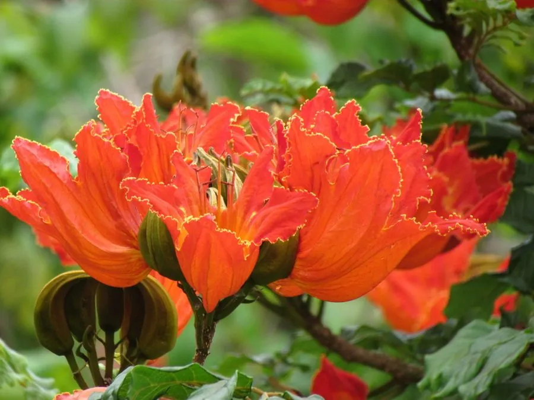

乔木 · 植物界
火焰树 Spathodea campanulata

原产非洲热带的常绿乔木，花朵橙红色、形似火焰，盛开时如树冠燃火，是热带地区著名的观花树种。
- 分类
- 门被子植物门纲木兰纲目唇形目科紫葳科属火焰树属
- 栖息环境
- 海拔 800 米以下的热带地区，喜高温多湿
- 地理分布
- 原产非洲热带地区，中国华南地区栽培
- 保护级别
- 暂无评估；中国未列入国家重点保护野生植物名录
物种志
火焰树为常绿乔木，高可达 15 m，树皮灰褐色；奇数羽状复叶对生，小叶 9–15 枚，椭圆形，全缘。花期 1–5 月，伞房花序顶生，花冠钟状、橙红色，花瓣边缘带黄色皱褶，花径 8–10 cm，形似火焰；蒴果长椭圆形，成熟时裂开，种子具半透明翅。
火焰树原产非洲热带地区，中国广东、广西、福建、海南、云南等地栽培，喜高温多湿、光照充足，适宜深厚肥沃、排水良好的土壤，不耐寒。花期长、花色热烈，盛开时如树冠燃火，是热带地区著名的观花树种，常用于公园、庭园与行道绿化；花朵含花蜜，可吸引鸟类传粉。火焰树在部分热带地区因繁殖力强而成为归化植物，栽培时需注意控制其扩散。
形态与习性
- 株高可达 15 m，树皮灰褐色
- 花期1–5 月，花橙红色
- 果期6–7 月，蒴果开裂
- 光照喜光，不耐长期荫蔽
- 水分喜湿润，怕积水
- 主要用途公园与庭园观花、行道树、花蜜吸引鸟类
趣味知识
- 火焰树的花朵橙红色、形似火焰，盛开时整棵树像燃起了火。
- 火焰树的花含花蜜，能吸引鸟类前来传粉。
- 火焰树原产非洲热带，在部分热带地区已成为归化植物。